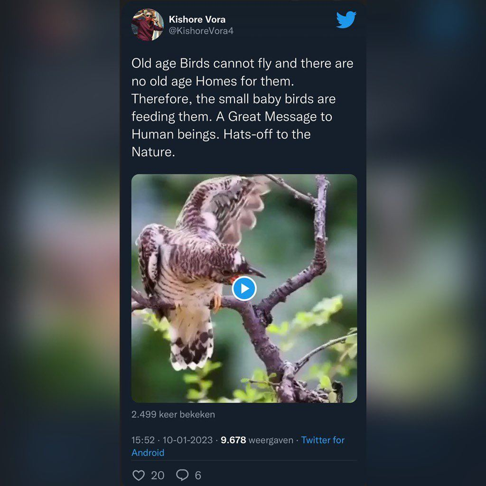
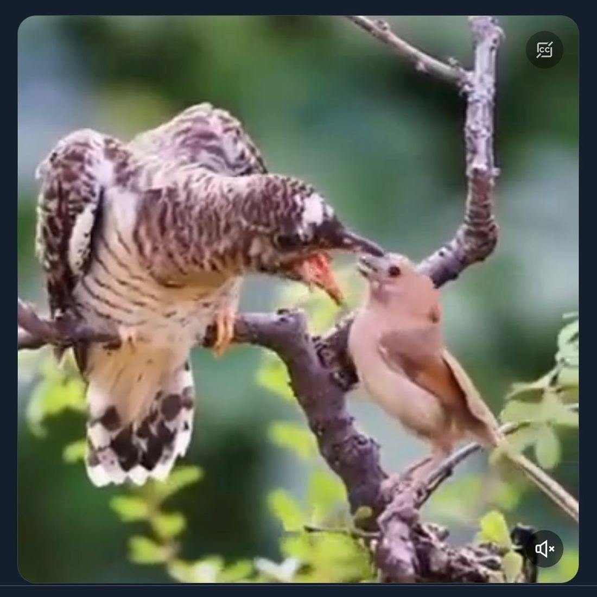

Het aandoenlijke koekoeksverhaal
11 januari 2023 · Ingezonden


Het verhaal klinkt wel echt aandoenlijk. Koekoeken zijn dat aan de andere kant totaal niet. Geloof niet elk verhaaltje wat je ziet op social media 😉